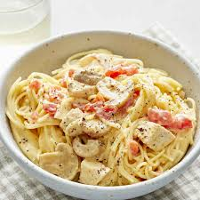

Quick and Easy Chicken Spaghetti
This chicken spaghetti recipe is quick and easy to make, yet hearty and delicious.
This specific recipe was submitted from Beamish on allrecipes.com.

Ingredients
- 1 (12 ounce) package angel hair pasta
- 2 cups chopped and cooked chicken breast
- 1 (10 ¾ ounce) can of condensed cream of chicken soup
- 1 (10 ounce) can diced tomatoes with green chile peppers
- ¾ (8 ounce) package of cheese
- ½ (4 ounce) jar sliced mushrooms, drained
- salt and pepper to taste
Directions
- Bring a large pot of lightly salted water to a boil. Cook angel hair pasta in the boiling water, stirring occasionally, until tender yet firm, roughly 4 to 5 minutes. Drain pasta and return it to the pot.
- Add chopped chicken, condensed soup, diced tomatoes with chile peppers, cheese, mushrooms, salt, and pepper.
- Cook and stir over low heat until cheese is melted and mixtured is heated through, about 5 minutes.
- Enjoy!
Return to Home